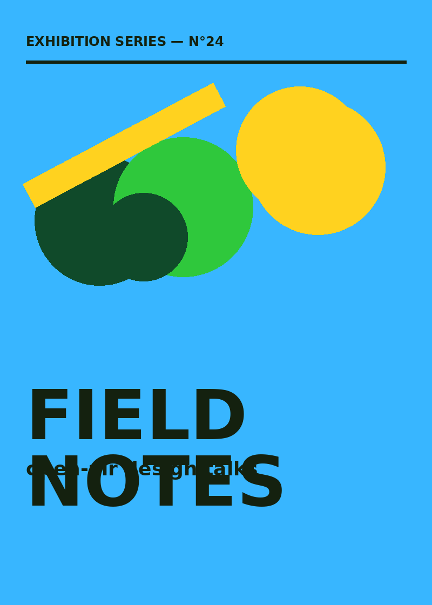
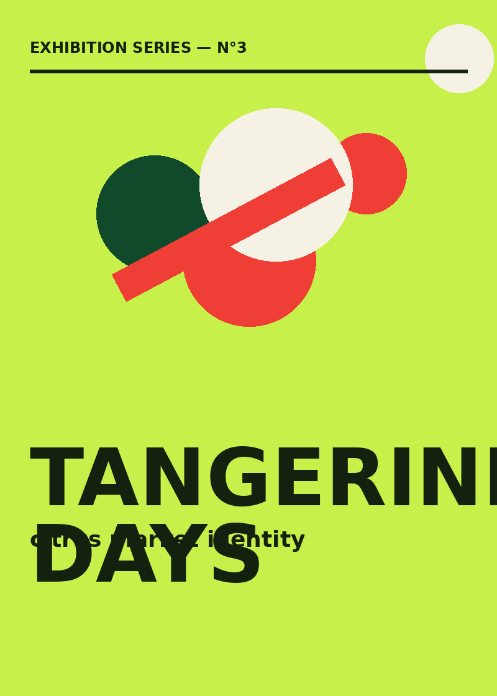
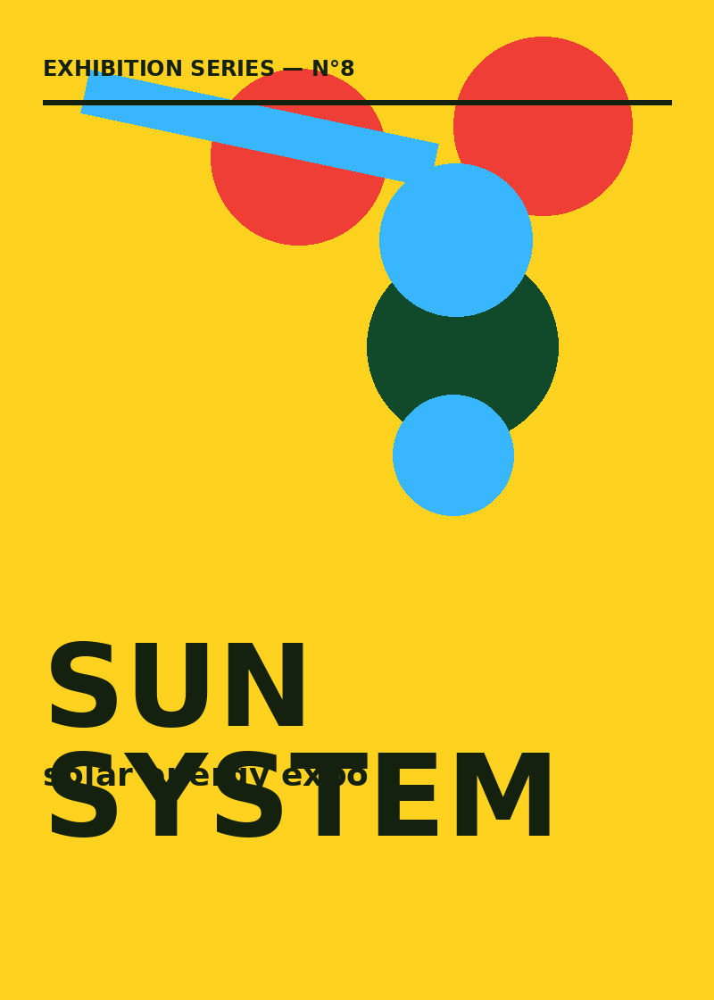

Posters
A wall-sized sketchbook. These are built at arm's length and read at twenty metres — type doing the heavy lifting, colour starting the argument, whitespace settling it.






Objective
Give small cultural events a visual voice louder than their budget. Each series shares one grid and one palette family so the events feel related without looking cloned.
Process
- Word-association sketching (10 min, no erasing)
- Type-first composition at 10% scale
- Colour blocking, then one irrational move
- Print test at real size, adjust by eye
Deliverables
- Key visual + 3 format adaptations
- Social crops and story versions
- Print-ready PDFs, CMYK + spot colour